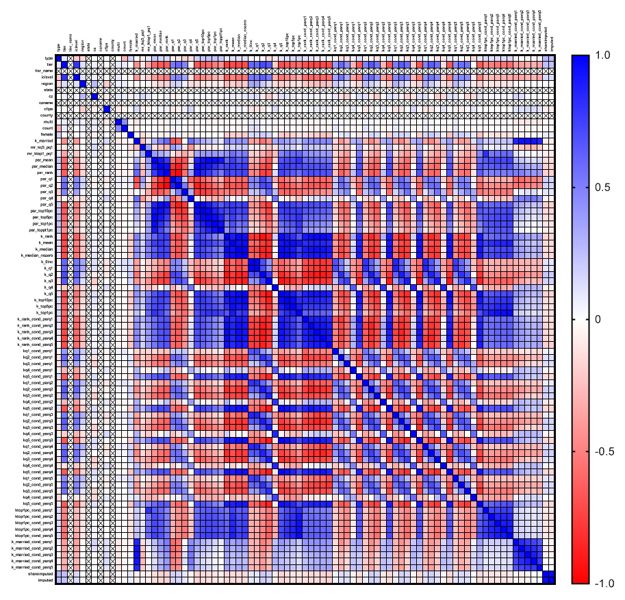
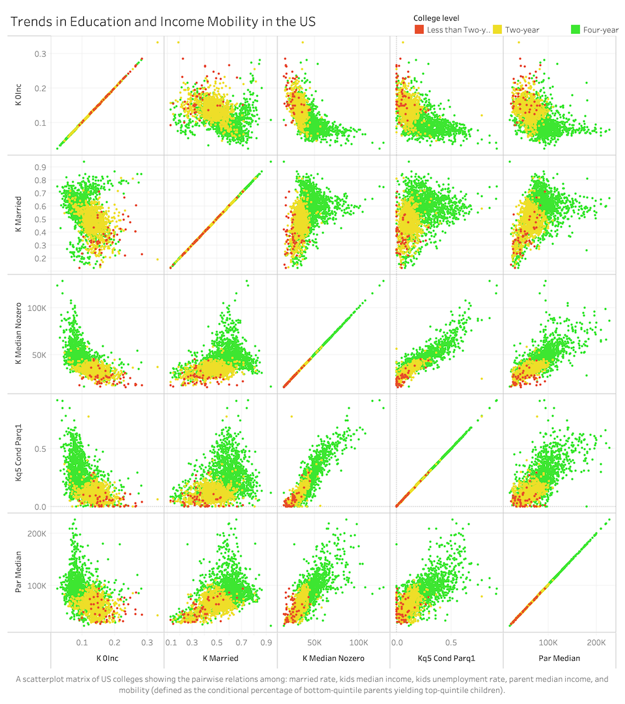

for trends in Education and Income Mobility in the US
Description
Hello everyone, welcome to my page, this page is using scatterplot matrix to show the pairwise relations among: married rate, kids median income,
kids unemployment rate, parent median income, and mobility (defined as the conditional percentage of bottom-quintile parents yielding top-quintile children).
Using a tool called GraphPad, I generated a correlation matrix to find columns in the data that have high correlation, either positive or negative.Here is the generated photo:

Eventually, I choose six columns that highly correlated:
iclevel: this column shows college level: four-year,two-year,less than two years.
K-married: this column shows the fraction of kids married in 2014
par_median: median parent household income (rounded to nearest $100).
k_median_nozero: median child individual earnings among people having jobs in 2014 (rounded to the nearest $100).
k_0inc: fraction of kids with zero labor earnings.
kq[5]_cond_parq[1]: mobility, or the probability of kid in quintile [5] conditional on parent in quintile [1], which means those kids become rich even they come from poor family.
Wrangling
For the d3 visualization, I generated a csv file with above six columns in tableau.
Visualizations
Prototype in Tableau

Live Version in D3.js
Instructions
The prototype scatterplot matrix generated with more 2665 rows, but for d3 Implemention version generated with only 500 rows. Because if I use same amount dataset as tableau version, it takes long time to open my website, so I changed the dataset to 500 rows for d3 implementation version, that's why it looks a litte different.
Discussion
Here we see that the pairwise relations among: married rate, kids median income, kids unemployment rate, parent median income, and mobility (defined as the conditional percentage of bottom-quintile parents yielding top-quintile children).If you any better ideas or suggestion, you can contact though my email downbelow.Thanks very much for visiting my website!